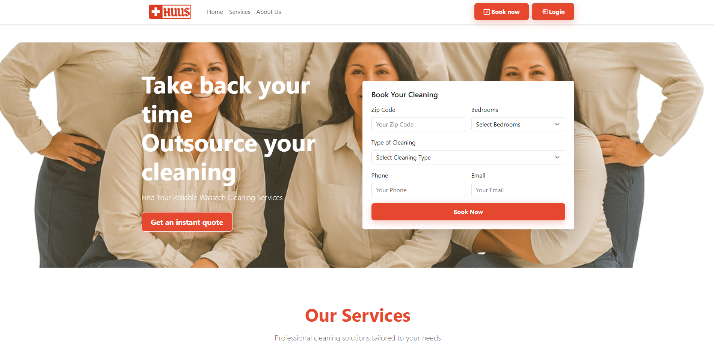
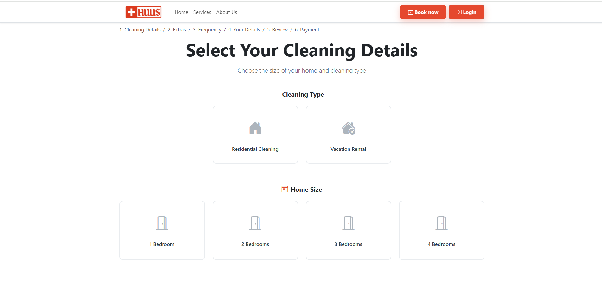
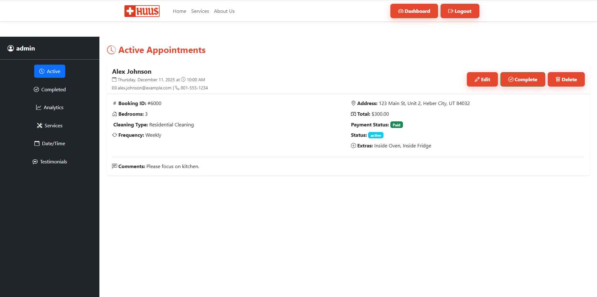
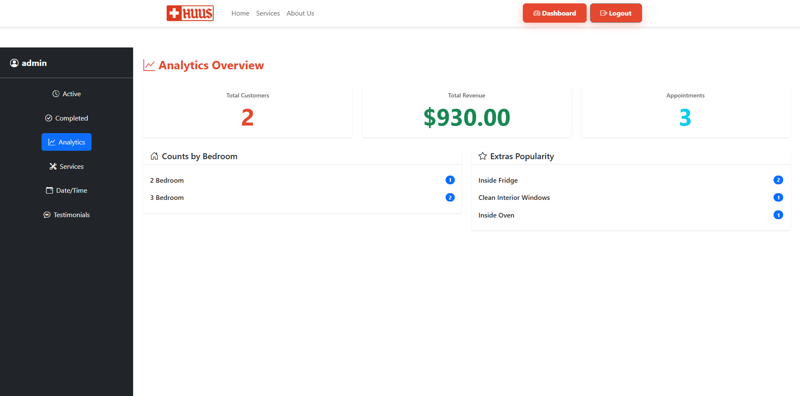

Huus Cleaning Platform
2025

Public-facing booking flow with cleaning type selection, extras, and pricing.
Overview
Developed a full-stack booking platform for short-term rental cleaning, enabling customers to schedule services through a guided multi-step workflow while providing administrators with tools to manage bookings, pricing, and operations.
Key Features



Key Contributions
- Built routing logic for a guided, multi-step booking workflow.
- Implemented session-based state to persist user selections.
- Developed pricing logic for cleaning types, extras, and frequency.
- Assisted with admin workflows for booking management.
- Helped prepare the application for cloud deployment.
Technologies Used
Node.js, Express, EJS, PostgreSQL, Tailwind CSS